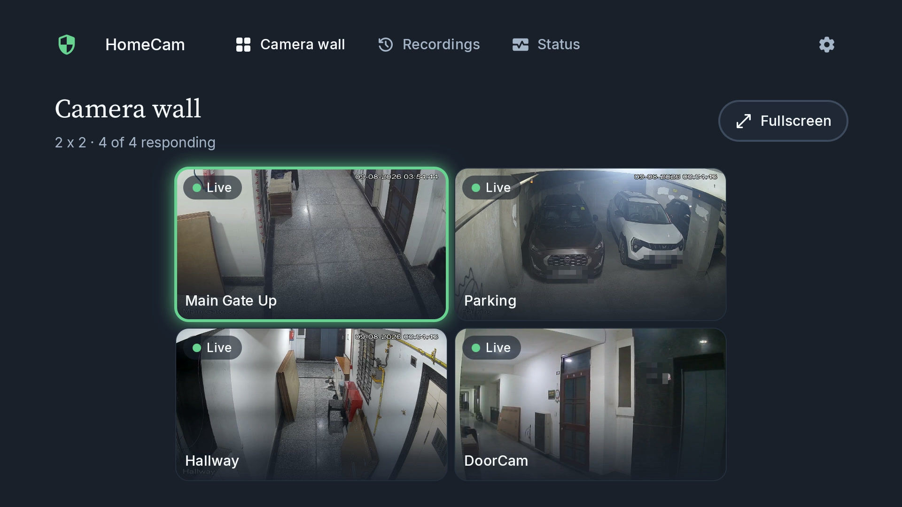
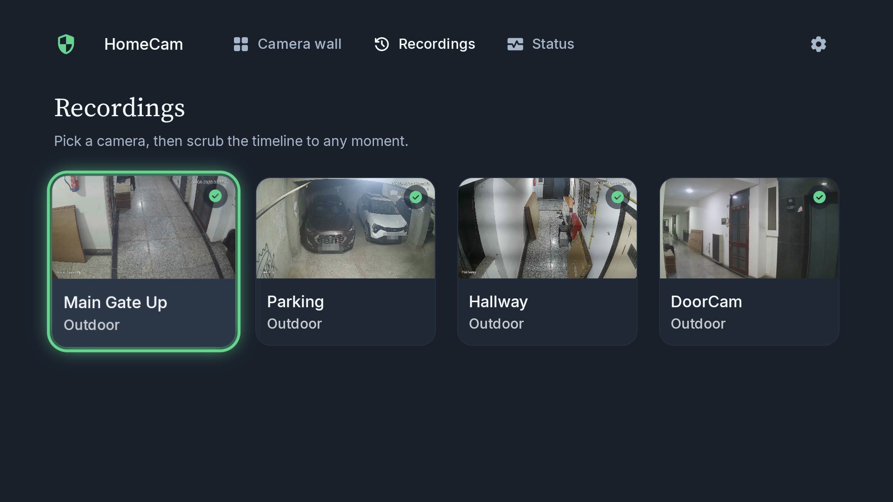
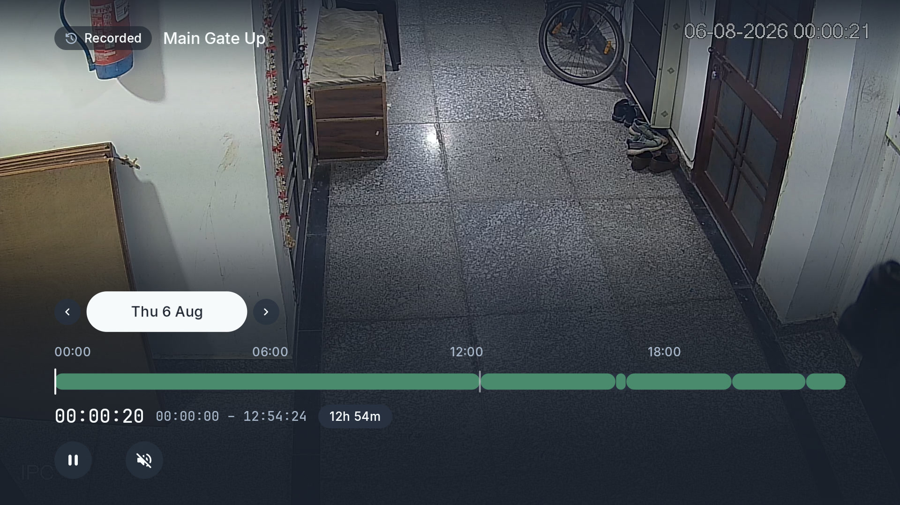
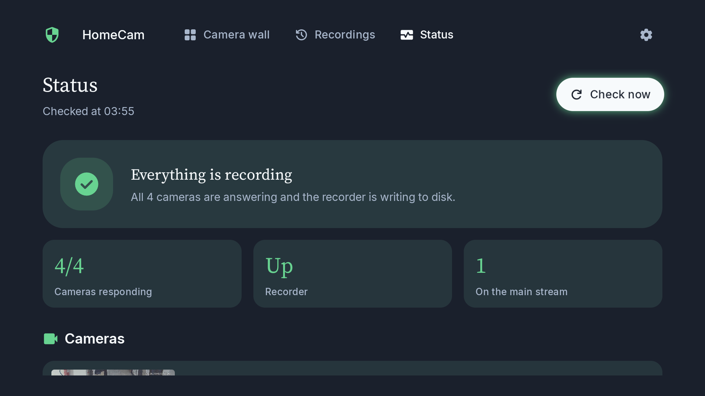
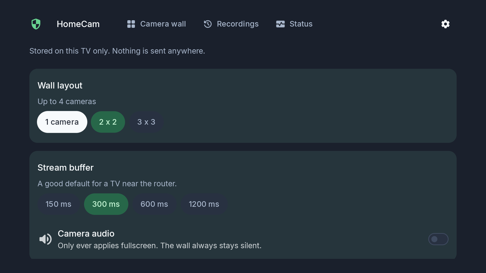

Your CCTV recorder on the TV, driven entirely by the remote. No phone, no cloud, no subscription.

Every camera at once, 1×1 / 2×2 / 3×3. Click one, it goes fullscreen.
Scrub a 24-hour timeline straight off the recorder's own archive. Any moment, no export step.
Answers the only question that matters at 2am: is this thing actually recording? Then the per-camera detail.
Changes camera. In playback it holds the time, so 18:05 on camera 1 becomes 18:05 on camera 2 — which is exactly what you want when you're following someone across a driveway.
Asks the recorder what channels it has and uses its names. Nothing about my setup is baked into the app.




Almost every camera app on a television is a phone app with a TV manifest entry bolted on. Focus lands nowhere, half the controls are unreachable, and the text is sized for someone holding a phone rather than someone three metres away on a sofa.
A remote has five buttons that move you and no cursor. That sounds like a restriction and is really a specification: at every instant, for each of four directions, there is exactly one correct next control — and if the framework can't work out what it is, the remote goes dead and the viewer has no recourse. Android's default answer is geometry, and geometry is wrong often enough to matter.
Focus search only considers views inside a beam projected from the focused one. A right-aligned action with empty space above it searches, finds no candidate, and strands you. Anything at a screen edge names its vertical neighbour explicitly instead of trusting the geometry.
Pressing up out of the page body landed on whichever tab happened to sit above the control you left from — so leaving Recordings could put you on Camera wall. Crossing that boundary is overridden to always return to the tab you are actually on. Movement inside the page is untouched.
Destinations that aren't the current one stay in the tree but are marked unfocusable, so a d-pad press can't wander into a page the viewer can't see.
None of that is visible when it works. It is only ever visible when it doesn't, which is the whole reason it's the part of this app that took the longest.
The same principle covers the hardware. One of my cameras publishes a sub-stream that carries audio and no picture — an actual fault on actual hardware, not a hypothetical. The app probes each channel once, stores the verdict per channel, and falls back to that camera's main stream instead of showing a black rectangle and hoping nobody notices. The verdict is cached because the probe costs a connection, and reset whenever you put that channel back on automatic.